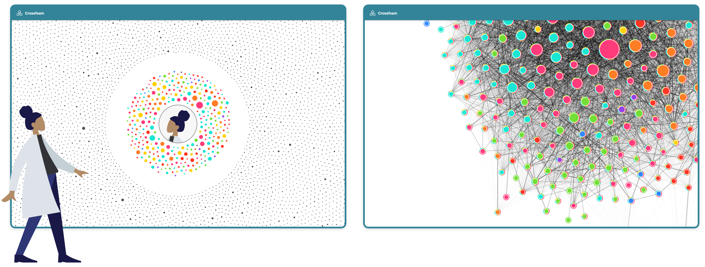
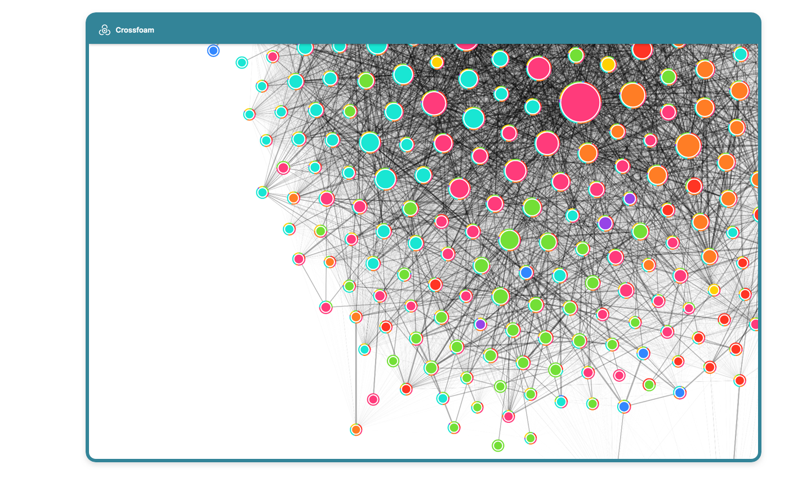

Welcome to Crossfoam
Crossfoam turns filter bubbles into lenses on the public.
Crossfoam is a browser plugin to visualise and utilise your filter bubbles on Twitter.
Other social networks will follow soon.
We live our lives in bubbles.
Our friends, our sources, and our conversations are not randomly selected. Instead we are much more likely to hear information which tilts towards our own opinions, likes and interests.
While there are bubbles everywhere, they take on a special character in our electronic lives. Self-selection, curation by algorithms, and economic incentives often shape online communities into echo chambers, where everyone agrees, and everyone repeats the same opinions.
Other communities with other backgrounds, other ideas and other opinions exist, but we are actively cut off from them. The result is repetition and sameness on the one hand and misunderstanding on the other.

Crossfoam analyses and visualises your filter bubbles on social media, so you can discover the extent to which your online community is an echo chamber or a place of diverse opinions.
Fine-grained analysis allows you to explore your social network, diversify it, or - if you prefer - dig deeper into your bubble. Crossfoam thus becomes a tool for electronic self-determination.
 GitHub: ULTRAPOP-de/Crossfoam
GitHub: ULTRAPOP-de/Crossfoam